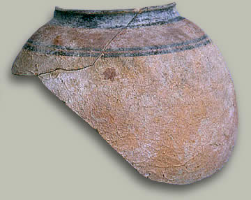

Terracotta pot sherdThis is a pot sherd from Lewan. It was made in about 2800 B.C. 
Pottery of this type is typical of the Kot Diji period. Kot Diji was an early Indus Valley settlement where pottery was found from before the Indus Valley period (about 2500-1700 B.C.). Thus, the period before the height of the Indus Valley Civilization is now known as 'Kot Diji'. |